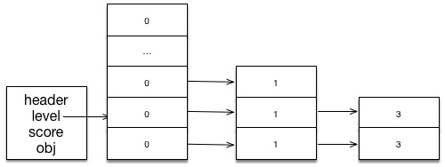
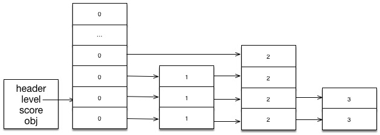

跳跃表是一种有序的列表，可以提供平均 O(logN)、最差 O(N) 复杂度的查找性能，而且相对于 AVL 跟 RB Tree 之类的结构来说有两大优势：
* 实现简单很多
* 平均性能差不多
所以有不少的实现在实现有序的 Set 时，更倾向于使用跳跃表，而且跳跃表在搜索引擎的实现中也占很重要的一部分。
在这里我们选择使用 redis 的跳跃表实现来对齐进行分析。
首先我们介绍一下他的大致结构
如图所示，所谓的跳跃表，即是在有序的列表中，加入了跳跃使用的指针，以允许从当前节点直接访问后续的其他节点，而不是只能通过遍历的形式来访问其他节点。
接着我们再看看他的基本定义：
// 跳跃表的节点定义
typedef struct zskiplistNode {
void *obj; // 当前节点的值
double score; // 当前节点的分值
struct zskiplistNode *backward; // 指向上一个节点
struct zskiplistLevel {
struct zskiplistNode *forward; // 下一层节点
unsigned int span; // 跃度，也就是跳跃的距离
} level [];
} zskiplistNode;
// 跳跃表的定义
typedef struct zskiplist {
struct zskiplistNode *header, *tail;
unsigned long length;
int level;
} zskiplist;整个跳跃表由 zskiplistNode 跟 zskiplist 组成；
zskiplist 负责管理整个链表的情况，如使用 header 跟 tail 来提供正反两个方向的遍历。
使用 length 来保存列表中 item 的数目，并使用 level 来提示算法，当前跳跃表的最高层数
需要注意的是，header 永远是有 MAX 层的，所以 header 的层数不计入 level 中。
接着是 zskiplistNode 的介绍
所以在下面的例子中，避免复杂度，所有的测试都以 score 为准
接下来我们从代码层面开始分析，首先是 skiplist 的初始化
zskiplistNode *zslCreateNode(int level, double score, void *obj) {
zskiplistNode *zn = zmalloc(
sizeof(*zn) * level * sizeof(struct zskiplistLevel));
zn->score = score;
zn->obj = obj;
return zn;
}
zskiplist *zslCreate(void) {
int j;
zskiplist *zsl;
// 对于 zmalloc 可以理解为就是 malloc 的简单封装，以便于随时更改内存分配器
zsl = zmalloc(sizeof(*zsl));
zsl->level = 1;
zsl->length = 0;
// 这里即是分配出一个有 ZSKIPLIST_MAXLEVEL 层的节点作为 header
// 并把新建节点的 score 设为 0，obj 设为 NULL
// 正如上面所说的，header 本身是不列入层数计算，并且不存放任何 obj 的
zsl->header = zslCreateNode(ZSKIPLIST_MAXLEVEL, 0, NULL);
for (j = 0; j < ZSKIPLIST_MAXLEVEL; j++) {
zsl->header->level[j].forward = NULL;
zsl->header->level[j].span = 0;
}
zsl->header->backward = NULL;
zsl->tail = NULL;
return zsl;
}通过以上函数，调用 zslCreate 之后，即可得到一个初始化完成的 skiplist，结构大致如下
_____
[ level ] = 1 | MAX | --> NULL
[ length ] = 0 | . | --> NULL
[ header ] -------> [ score ] = 0 | . | --> NULL
[ tail ] = NULL [ obj ] = NULL | . | --> NULL
[ level ] ---------> | 1 | --> NULL
| 0 | --> NULL
|_____|接下来我们通过测试代码来逐步分析 skiplist 在进行操作时会有什么动作
// 初始化要插入的对象
int array[10];
for (int i = 0; i < (sizeof(array) / sizeof(int)); i++) {
array[i] = i + 1;
}
zskiplist *sl = zslCreate();
zskiplistNode *node = zslInsert(sl, array[0], array);
zskiplistNode *node2 = zslInsert(sl, array[1], array + 1);
上面的代码我们初始化了一个包含 10 个数字的数字，作为 obj 来插入列表
然后测试插入了两个元素，包括第一个 score 为 1 obj 为 1 的对象，以及第二个 score 为 2 obj 为 2 的对象。
接下来我们先分析下， zslInsert 到底做了什么。
zskiplistNode *zslInsert(zskiplist *zsl, double score, void *obj) {
// x 是当前处理的节点
// update 数组保存的是:
// 小于 新节点的节点将指向新节点，大于新节点的节点将更新 span
zskiplistNode *update[ZSKIPLIST_MAXLEVEL], *x;
unsigned int rank[ZSKIPLIST_MAXLEVEL];
int i, level;
x = zsl->header; // 首先获取 header
// 从当前 skiplist 的最高层开始查找合适的位置，因为越高层指向的目标就可能越远
for (i = zsl->level-1; i >= 0; i--) {
// storea rank that is crossed to reach the insert position
// 保存 rank ???
rank[i] = i == (zsl->level-1) ? 0 : rank[i+1];
// 如果新增对象的 score 小于下一个节点的 score
// 或 score 相等但 compare 的结果小于下一节点的 obj
// 这里使用下一节点是因为，当前节点是从 header 开始的，而 header 是存实际 obj 的
while (x->level[i].forward &&
(x->level[i].forward->score < score ||
(x->level[i].forward->score == score &&
compareStringObjects(x->level[i].forward->obj, obj) < 0)
)) {
// rank 加上当前节点当前层的跨度？
rank[i] += x->level[i].span;
x = x->level[i].forward;
}
// 保存所有节点到 update 中
update[i] = x;
}
// 新建一个节点，给予一个随机的层级
level = zslRandomLevel();
// 如果新节点的层数大于现有的最大层，则更新现有的所有旧有层次
if (level > zsl->level) {
for (i = zsl->level; i < level; i++) {
// 更新所有旧有层次，让其指向 header,
// 并让所有第 i 层的 span 跨度设为 zsl 的节点数，也就是直接跨越到最后
rank[i] = 0;
update[i] = zsl->header;
update[i]->level[i].span = zsl->length;
}
zsl->level = level; // 更新 skiplist 的最高层为
}
// 终于到创建新节点的这步了，创建一个 level 层的节点，并设置好 sroce 跟 obj
x = zslCreateNode(level, score, obj);
// 更新新节点的低于旧有最高层的层次
for (i = 0; i < level; i++) {
// 更新 x 的第 i 层节点的指向
x->level[i].forward = update[i]->level[i].forward;
update[i]->level[i].forward = x;
x->level[i].span = update[i]->level[i].span - (rank[0] - rank[i]);
update[i]->level[i].span = (rank[0] - rank[i]) + 1;
}
// 将所有高于新节点的层的跨度增加 1
for (i = level; i < zsl->level; i++) {
update[i]->level[i].span++;
}
// 更新新节点的后退指针，如果是第一层，则设置为 NULL(因为没有上一层了）
// 否则设置为 update[0] ??
x->backward = (update[0] == zsl->header) ? NULL : update[0];
// 如果有下一个节点，则将下一个节点的后退指针设为新节点
if (x->level[0].forward)
x->level[0].forward->backward = x;
else
// 如果没有下一个节点，说明是最后一个节点
zsl->tail = x;
zsl->length++;
return x;
}redis 的 skiplist 的插入代码较长，所以我们分段进行分析，并且在分析的时候已我们的测试代码为准，如我们现在即将调用的
// array[0] = 1
// array = 1
zskiplistNode *node = zslInsert(sl, array[0], array);首先从 初始化图 可以得知 skiplist 现在的状态，接下来逐步分析插入的代码，
我们向 sl 插入了 score 为 1，obj 指向 1 的信息，接下来进入函数的第一步骤
x = zsl->header;
// 当前的 level 是 1, 所以只会循环一次，并且 i = 0
for (i = zsl->level-1; i >= 0; i--) {
// 所以这里的 rank[i] = 0;
rank[i] = i == (zsl->level-1) ? 0 : rank[i+1];
// 而这里的 forward 一开始是为 NULL 的，所以不会进入循环
while (x->level[i].forward &&
(x->level[i].forward->score < score ||
(x->level[i].forward->score == score &&
compareStringObjects(x->level[i].forward->obj, obj) < 0)
)) {
rank[i] += x->level[i].span;
x = x->level[i].forward;
}
update[i] = x;
}所以执行完之后，各变量的状态转为
x = header;
update = [ header, NULL, ... ];
rank = [ 0, 0, 0, ... ];并假设新节点的层级由随机数得到 3，则下面的第二步骤的具体细节为
level = zslRandomLevel(); // 假设为 3
// 当前 zsl->level 为 1， 所以进入循环
if (level > zsl->level) {
// 这边的循环则是更新指定的 update 跟 rank
for (i = zsl->level; i < level; i++) {
// 更新所有旧有层次，让其指向 header,
// 并让所有第 i 层的 span 跨度设为 zsl 的节点数，也就是直接跨越到最后
rank[i] = 0;
update[i] = zsl->header;
update[i]->level[i].span = zsl->length;
}
zsl->level = level; // 更新 skiplist 的最高层为
}执行完后，各变量的状态转为
zsl->level = 3;
update = [ header, header, header, NULL, ... ];
rank = [0, 0, 0, ... ];
header->level[1].span = 1;
header->level[2].span = 1;接下来是插入的最后一个步骤了，这里会依据 update 的内容来更新 skiplist，并且会往其中加入新节点
// 创建新节点
x = zslCreateNode(level, score, obj);
for (i = 0; i < level; i++) {
// 将新节点的各层的 forward 设置为对应 update 的 forward
// 并将原有 update 节点的 forward 指向新节点
x->level[i].forward = update[i]->level[i].forward;
update[i]->level[i].forward = x;
// 将新节点各层的 span 设置为原有节点对应层的 span 并减去 rank[0] - rank[i];
x->level[i].span = update[i]->level[i].span - (rank[0] - rank[i]);
// 然后更新原有 update 对应层的 span 为 rank[0] - rank[i] + 1，也就是对应的 span 加上1
update[i]->level[i].span = (rank[0] - rank[i]) + 1;
}
// 将所有高于新节点的层的跨度增加 1
for (i = level; i < zsl->level; i++) {
update[i]->level[i].span++;
}
// 更新新节点的后退指针，如果是第一层，则设置为 NULL(因为没有上一层了）
// 否则设置为 update[0] ??
x->backward = (update[0] == zsl->header) ? NULL : update[0];
// 如果有下一个节点，则将下一个节点的后退指针设为新节点
if (x->level[0].forward)
x->level[0].forward->backward = x;
else
// 如果没有下一个节点，说明是最后一个节点
zsl->tail = x;
zsl->length++;
return x;这次调用马上结束了，最后来看看这次的调用结果，将 zsl 这个 skiplist 变成什么样了，
x = {
backward: NULL,
score : 3,
obj : 3,
level : [ NULL, ... ]
}
zsl = {
leve : 3
length: 1
header: -----> [ score ] = 0
tail : x [ obj ] = NULL
[ level ] = [ ... ]
}
zsl->header.level = [
{ ____
span: 1, forward ----> | |
}, | x |
{ | 3 |
span: 1, forward ----> | 3 |
}, | |
{ | |
span: 1, forward ----> |____|
}
]接下来分析第二次插入时的情况，这次我们就不逐步分析，而是直接查看插入后的结果了。
首先是对第一步骤的分析，我们现在要插入的节点是 score = 3, obj = 3，在执行完第一步骤后继续执行第二步骤，根据新节点的随机 level 填充 update 跟更新 skiplist 的 level, 我们假设新节点的随机层数为 2 ，则执行代码
zslInsert(zsl, array[2], array + 2); // 3, 3x = { zsl = {
backward: NULL, level: 3,
score: 3, length: 1,
obj : 3, header: ------> header,
level: [ empty, ... ] };
};
level = 2
rank = [ 1, 1, 1, ... ]
// update 列表中对象是指 { level, score, obj }
update = [ { 3, 3, 3 }, { 3, 3, 3 }, { 3, 3, 3 }, ... ]第三步骤，则负责更新整个 update 对应的对象，以及新对象的指针

下面我们继续插入新的数据节点，这次插入的是另一个节点
zslInsert(zsl, array[1], array + 1); // 2, 2并且我们假设其随机生成的层数 level 为 4 层，则插入之后 skiplist 的状态为

插入一定量的数据之后，整个 skiplist 树已经趋于稳定状态，现在我们开始来介绍下查找数据的流程，同样的，我们还是以测试代码为驱动，来分析具体的查找流程，一下是测试代码
// 函数原型
zskiplistNode* zslGetElementByRank(zskiplist *zsl, unsigned long rank);
// 测试代码
zskiplistNode *node;
node = zslGetElementByRank(zsl, 2); // 获取排名第二的元素因为整个 skiplist 都是有序的，所以最简单的查找方式就是从头开始找（当然也可以从后面开始找，这样就可以换一种顺序来得到数据了，但我们为了简单只讨论第一种），但因为 skiplist 为我们提供了指向多级节点之后的指针，我们才能提高查找的效率。
从上面的结构图我们可以看到，从层数来分析，层级越高的元素，能够跨越的距离就越远，所以在进行搜索的时候我们会倾向于从最高点开始往下找，这样就能充分利用 skiplist 为我们提供的效率。
接下来继续看看 skiplist 的查找实现
zskiplistNode* zslGetElementByRank(zskiplist *zsl, unsigned long rank) {
zskiplistNode *x;
unsigned long traversed = 0;
int i;
x = zsl->header;
// 从当前最高层开始，遍历所有的层
for (i = zsl->level-1; i >= 0; i--) {
// 如果当前节点的当前层跟下一节点的距离，小于我们想查找的位置，
// 则将当前节点指向下一节点，并将已经跨越的距离加上当前节点跟下一节点的距离
while (x->level[i].forward && (traversed + x->level[i].span <= rank)) {
traversed += x->level[i].span;
x = x->level[i].forward;
}
// 如果找到了对应的层级
if (traversed == rank) {
return x;
}
}
return NULL;
}具体的实现也是跟设定的逻辑一致，从最高层开始最小化查找的次数。
接下来看另外一个实现，查找某个元素，因为保存的是 void* 指针，所以就导致了，必须提供自定义的比较函数，否则就会使用直接比较指针地址的方式。
// 函数原型
typedef int (cmpfunc)(void *x, void *y);
zskiplistNode* zslGetNode(zskiplist *zsl, void *obj, cmpfunc cmp);
int cmp(void *xp, void *yp) {
int x = *(int *)xp;
int y = *(int *)yp;
if (x == y) {
return 0;
}
else if (x < y) {
return -1;
}
else {
return 1;
}
}
// 开始查找
int i = 3;
zskiplistNode *node = zslGetNode(zsl, &i, cmp);
为了便于理解，我们首先把查找的过程以图形的方式画出。

查找方式跟之前的还是相同的，区别就只是不再按 score 查找，而是根据 obj 之间的 cmp 函数，来决定是要使用当前层往前找，还是使用第一层的指针往前找而已。下面是具体的查找代码
zskiplistNode* zslGetNode(zskiplist *zsl, void *obj, cmpfunc cmp) {
zskiplistNode *x;
int c;
int i;
x = zsl->header;
for (i = zsl->level; i >= 0; i--) {
while ( (c = cmp(obj, x->level[i].forward->obj)) < 0) {
x = x->level[i].forward;
}
if (c == 0) { // found it!
return x->level[i].forward;
}
}
return NULL;
}看完上面的所有介绍后，其实可以很容易的就联想到，关于 skiplist 的操作，基本都是基于其中的 update 指针，也就是那个指向指定节点 x 的前置节点集合。只要得到这个集合，要删除某个操作时，只需要将 update 指针指向 x 的节点，改成指向 x 对应层级的下一层就可以了，而高度高于 x 节点的，则只需要将 span 减少。